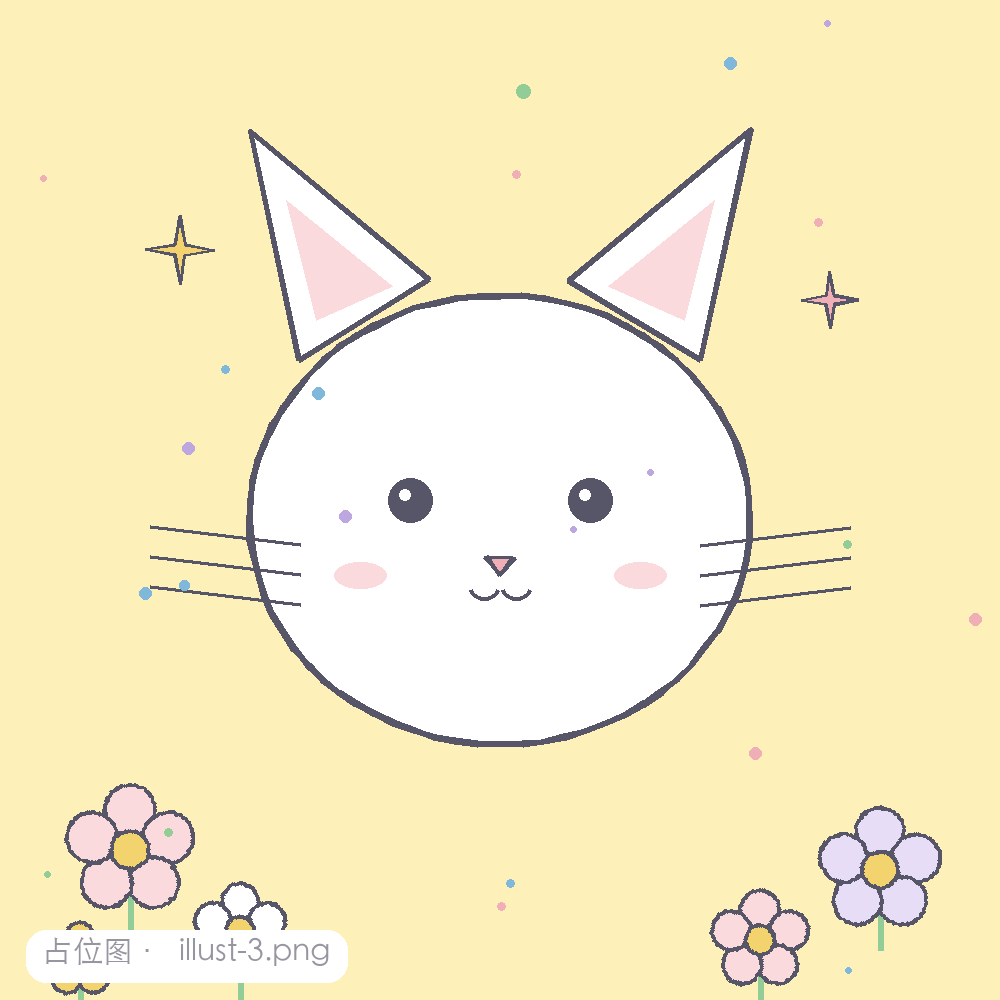
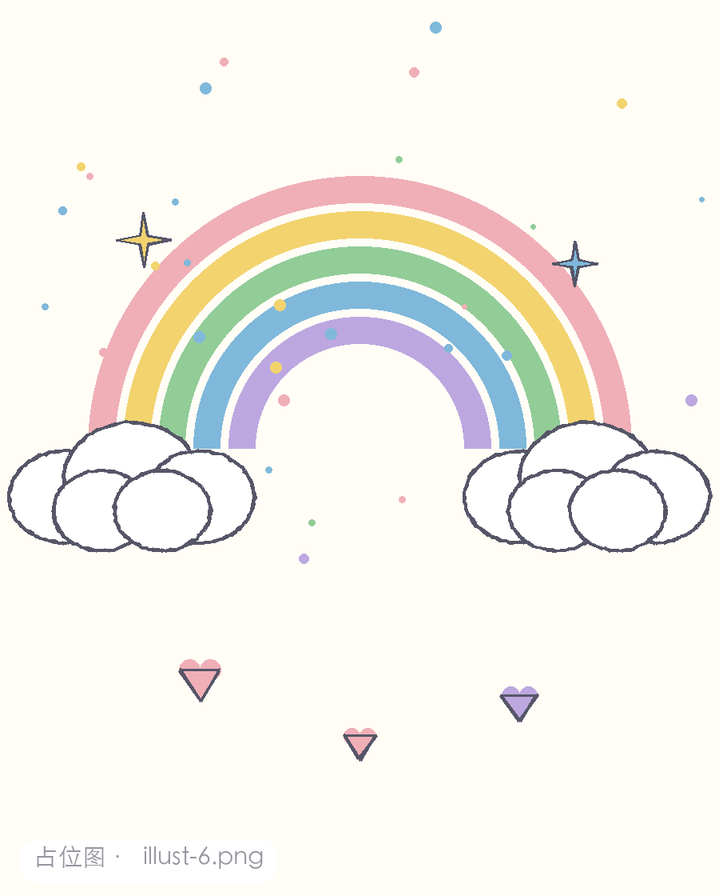
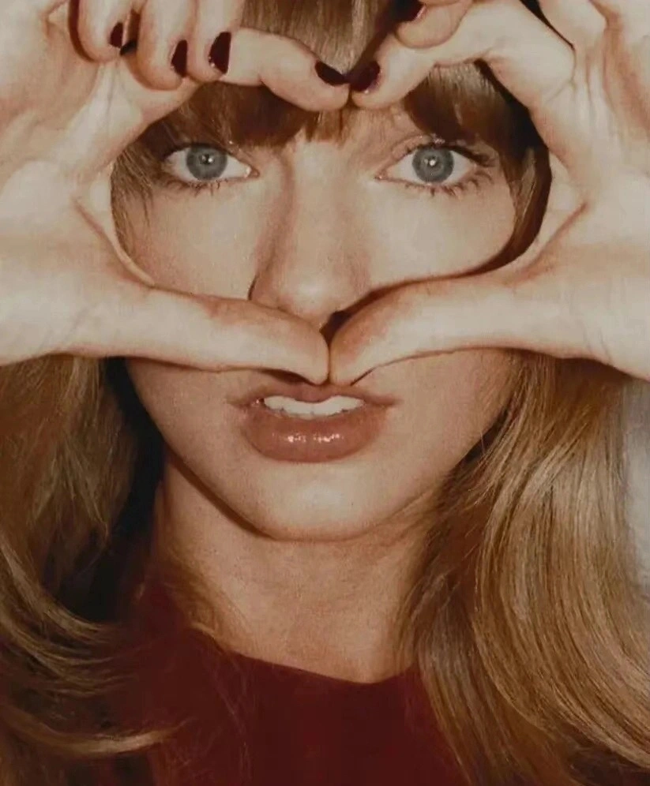

✏️ Hi! u can call me _Anfu_
Welcome to my world！
Here’s my resume.
我是尹浩怡（Anfu），一个喜欢画画和创作的小女孩。 这里收藏着我的小画、奇思妙想和会动的小故事，随便逛，慢慢看 ♡

meow~
good night

lucky day
about me
简单认识一下

我是尹浩怡，也可以叫我 Anfu ～
非常擅长绘画，学过素描、水彩和油画（油画最擅长！）。 平时脑子里会冒出很多奇奇怪怪的创意画面， 也会产出一些同人 / 原创作品（非常低产呃……）、meme 和短视频素材。
更多内容可以在作品页慢慢 appreciate ♡
🎨 油画
💧 水彩
✏️ 素描
💡 创意构思
🎬 短视频 / meme
recent works